Digital Leaders 2026 · World Map
Where does the digital economy go to school?
Most rankings begin with institutions. This one begins with people, and follows their careers back to the schools that trained them.
analysed
to an institution
a Global rank
represented
Scroll to begin
The method, in three sentences
We do not start from prestige, budgets or survey panels. We start from careers.
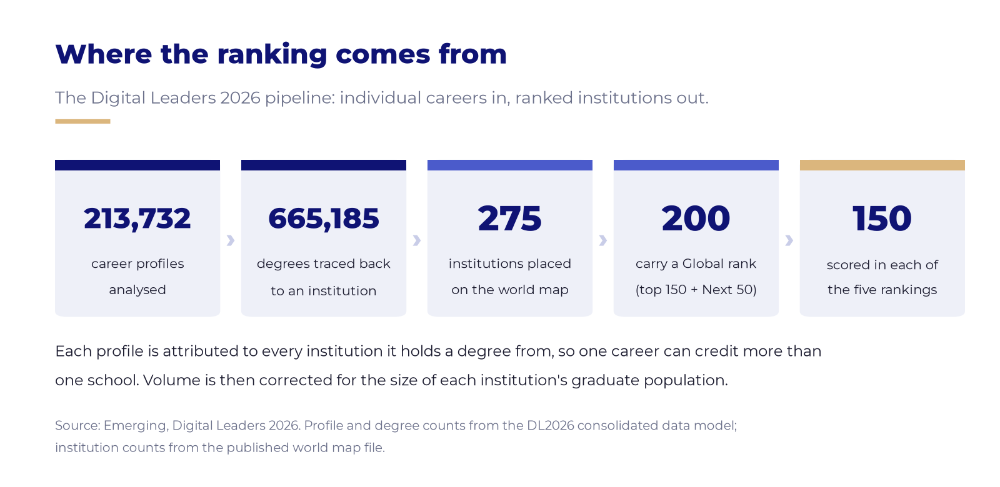
Careers in, ranked institutions out
We take 213,732 real career profiles, from engineers to founders to executives, and trace each one, degree by degree, back to the institution that trained them. That is 665,185 degrees in all.
To keep the comparison fair, an institution is scored on how efficiently it converts graduates into high-impact careers, not on how many graduates it has. A 5,000-student engineering school can outrank a 50,000-student university.
Profile and degree counts come from the DL2026 consolidated data model. The 275, 200 and 150 are counted directly from the published map file.
Four lenses on the same question
The Global ranking is a straight average of four equally weighted rankings, 25% each.
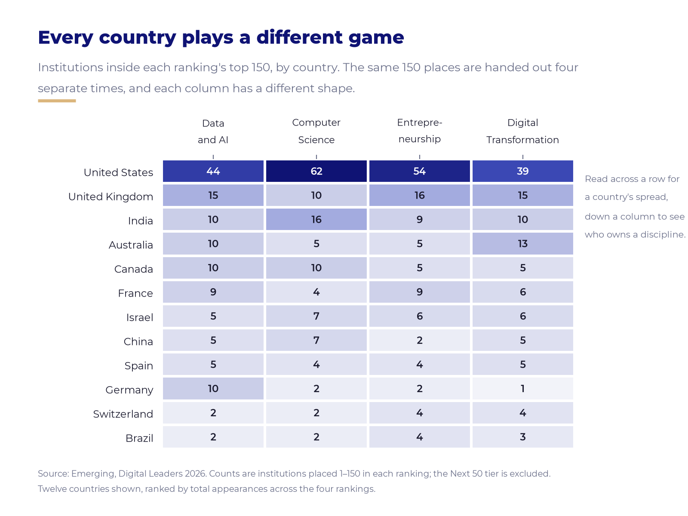
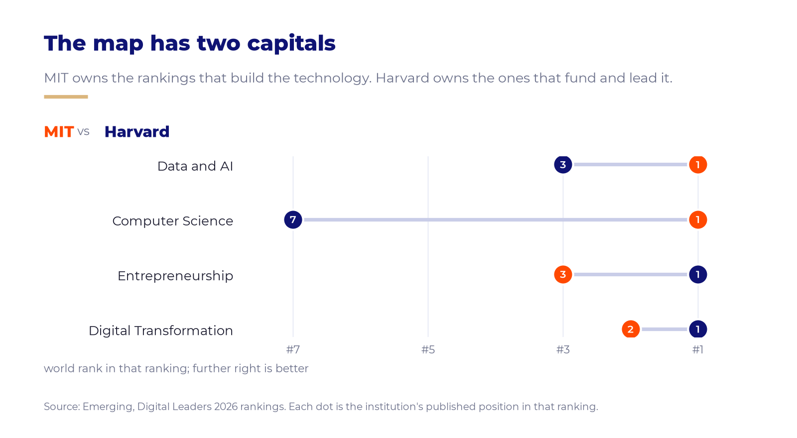
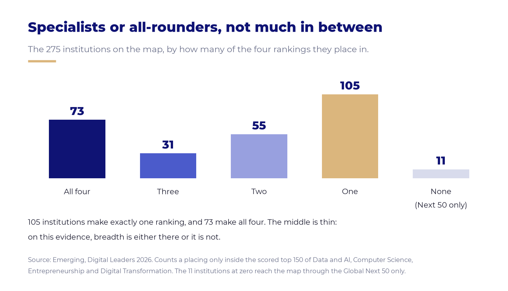
Every country plays a different game
The same 150 places are handed out four separate times, and the shape of each column is different. Computer Science is the most American ranking on the map: 62 of its 150 places, more than four in ten.
India is the strongest non-Anglophone bench there with 16. France ties India in Entrepreneurship with 9 each. Australia is strongest in Digital Transformation.
The map has two capitals
MIT takes first place in Data and AI and in Computer Science. Harvard takes first in Entrepreneurship and in Digital Transformation. One owns the rankings that build the technology; the other owns the ones that fund and lead it.
The gap is widest in Computer Science, where Harvard sits at #7, its lowest placing anywhere.
Specialists or all-rounders, not much in between
105 institutions make exactly one of the four rankings. 73 make all four. The middle is thin: on this evidence, breadth is either there or it is not.
The all-rounders are not only the names you would expect. Israel's Technion, Bar-Ilan and Ben-Gurion are among them, as are five of India's IITs.
Who is actually on the map
Two hundred institutions carry a Global rank. Here is every one of them, one square each.
The Global 200, by country
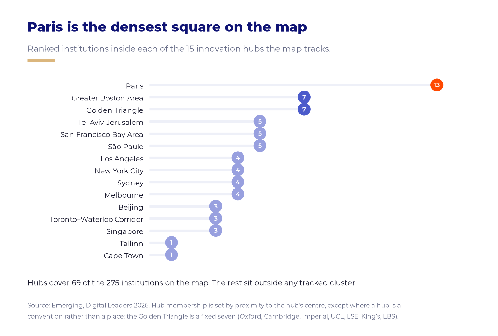
Eight countries hold two thirds of it
The United States takes 48 of the 200 places, the United Kingdom 19, India 15. Together the top eight countries hold 130 of 200, or 65%, leaving 70 places for the other 33 countries.
As a bloc, Europe edges North America
Recolour the same 200 squares by region and the American lead narrows to nothing: Western Europe holds 60 places, North America 59. Asia follows with 33.
Regions are Emerging's own groupings. Israel and Turkey sit in MENA, not in Asia or Europe.
Nearly three in ten are specialists
Traditional universities hold 142 of the 200 places. The remaining 58 are science-and-technology schools or business schools, exactly the kind of focused institution an efficiency measure is built to surface.
And they cluster
The map tracks 15 innovation hubs. Paris carries 13 ranked institutions, nearly twice as many as Greater Boston or London's Golden Triangle, which tie on seven.
Hub membership is counted across all 275 institutions on the map, not only the Global 200. That is why Paris shows 13 while France holds 11 Global places.
Strength, density, evolution
Three ways to read a country, and they do not agree with each other.
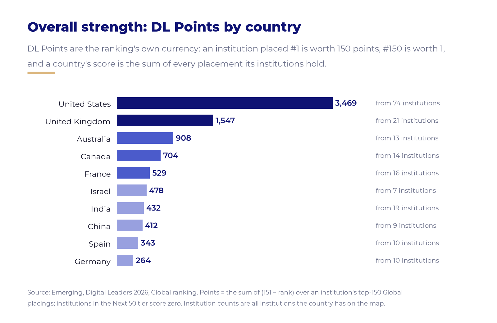
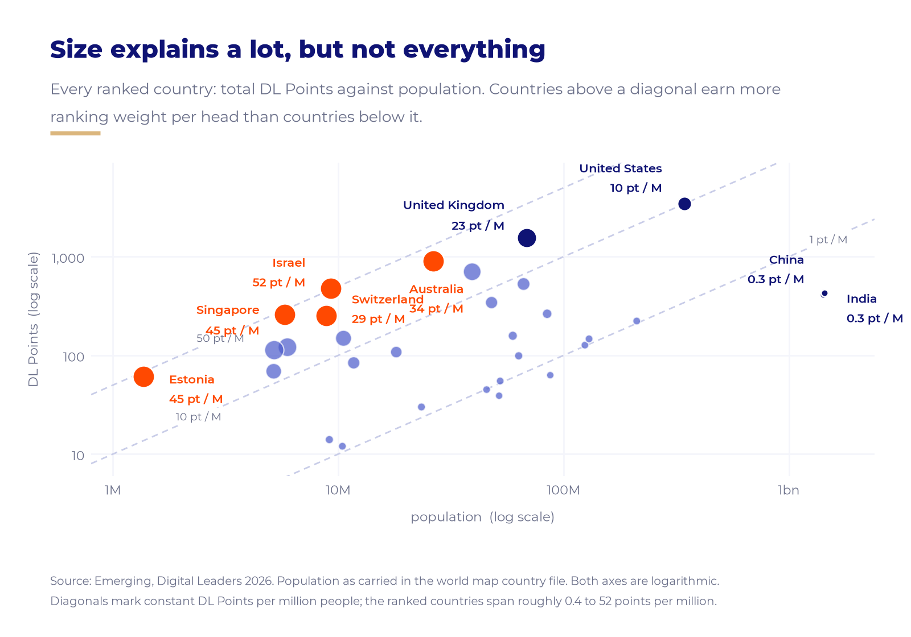
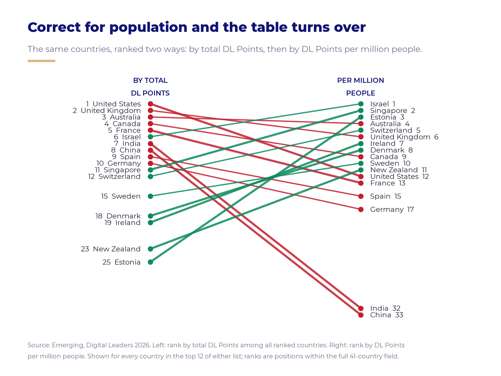
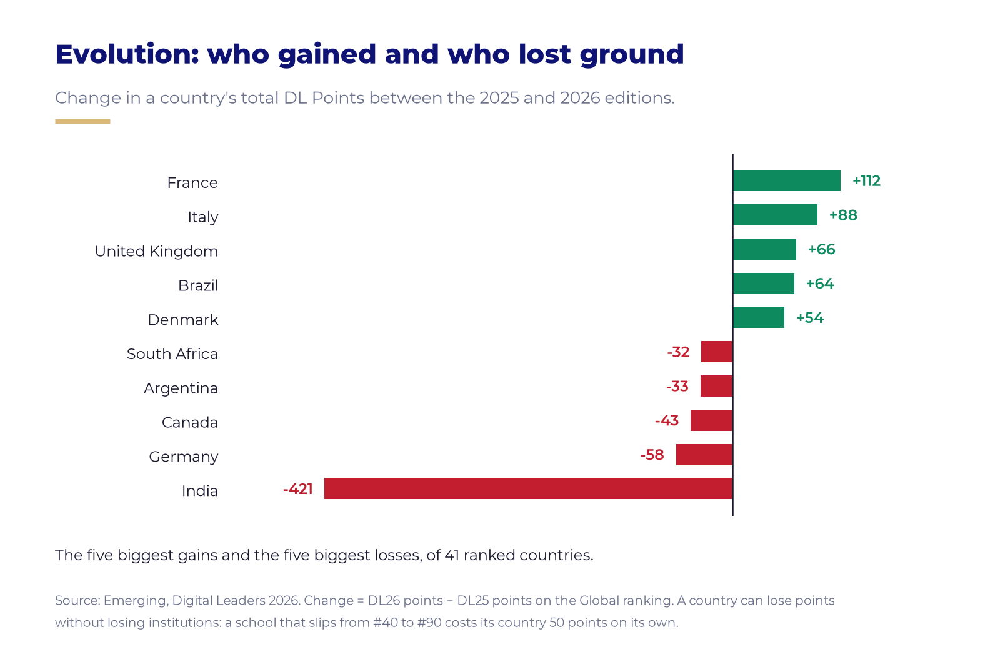
Overall strength: the ranking's own currency
An institution placed first is worth 150 DL Points, one placed 150th is worth 1, and a country's score is the sum of every placing its institutions hold. The United States leads with 3,469 points, more than double the United Kingdom's 1,547.
Then divide by population
Israel earns 51.6 DL Points per million people, five times the American rate, from a base of seven institutions. Singapore reaches 44.9 and Estonia 44.6, the latter on a single ranked institution.
Population comes from the country file behind the map; its vintage should be confirmed before publication, since every figure here depends on it.
And the table turns over
India falls from 7th to 32nd. China falls from 8th to 33rd. Estonia climbs from 25th to 3rd, Israel from 6th to 1st. Size and density are simply not the same story.
Evolution: who gained, who lost
France added the most ground between the two editions, +112 points, ahead of Italy, the UK, Brazil and Denmark. India's −421 is the sharpest national decline on the map.
A country can lose points without losing institutions: a school slipping from 40th to 90th costs its country 50 points on its own.
Who moved
Rankings only get interesting once you compare two years.
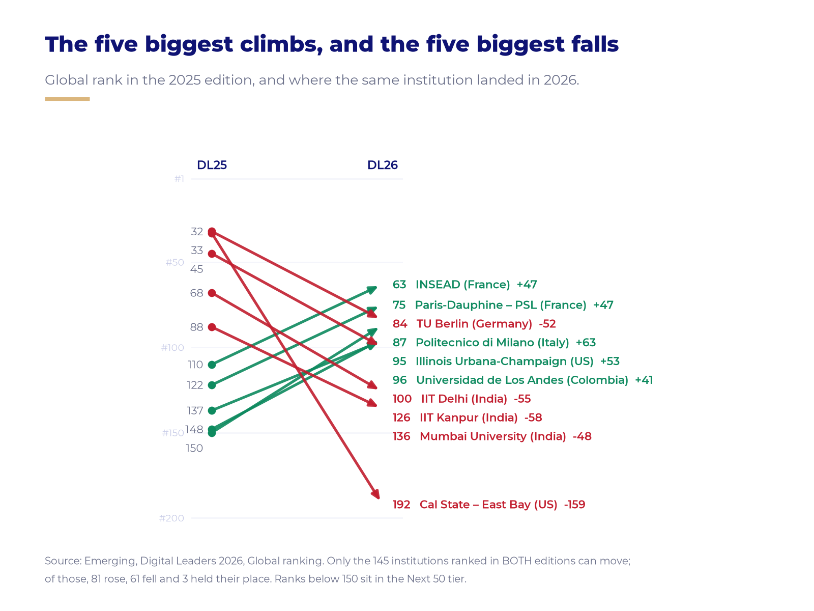
Milan climbed 63 places. East Bay fell 159.
Politecnico di Milano rose from 150th to 87th, ahead of Illinois Urbana-Champaign at +53 and two French institutions, Paris-Dauphine and INSEAD, at +47 each. Waterloo climbed 39 places into the global top 20.
The steepest fall belongs to California State – East Bay, from 33rd to 192nd. Three of India's IITs each dropped between 39 and 58 places, and Germany showed both directions at once: TU Munich held the top ten while TU Berlin fell 52.
Only the 145 institutions ranked in both editions can move. Of those, 81 rose, 61 fell and 3 held their place.
New on the map
Fresh institutions, and eight countries appearing for the first time.
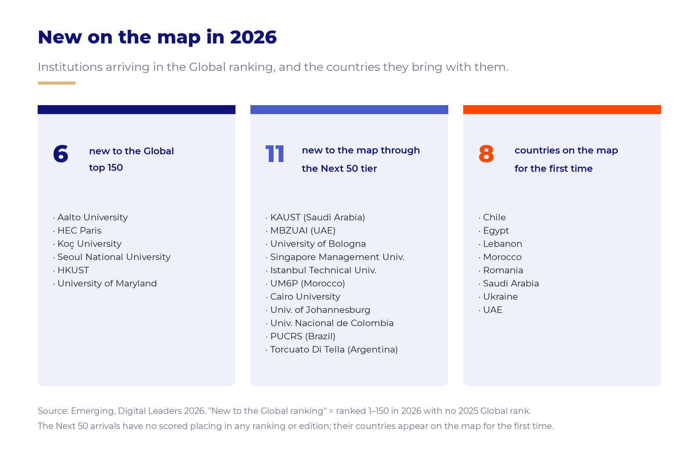
The map keeps widening
Six institutions are new to the Global top 150 this year: Aalto, HEC Paris, Koç, Seoul National, HKUST and Maryland. Eleven more arrive through the Next 50 tier, among them KAUST, MBZUAI and the University of Bologna.
They bring eight countries onto the Digital Leaders map for the first time: Saudi Arabia, the UAE, Morocco, Egypt, Chile, Romania, Ukraine and Lebanon.